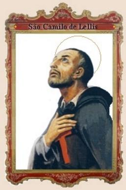
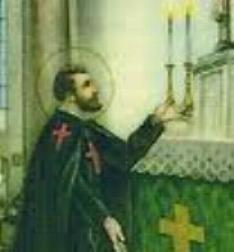
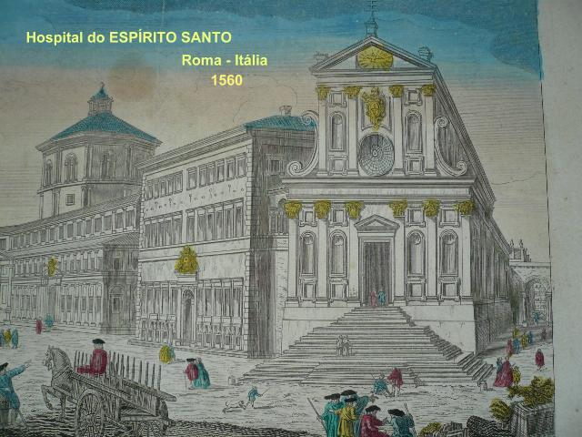
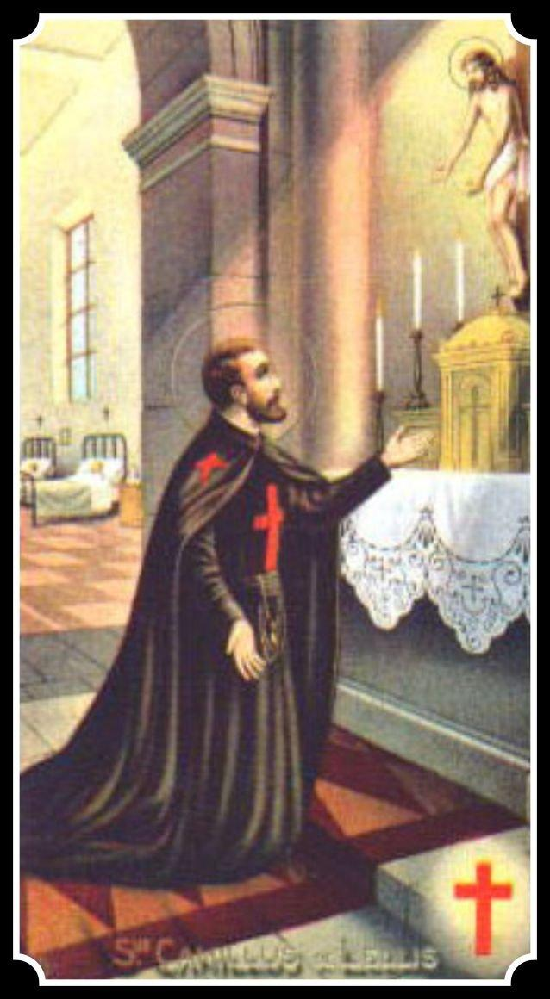
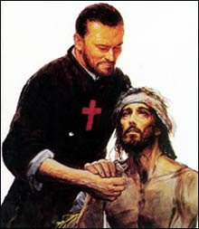

ABRASADO PELO AMOR DIVINO
A FORÇA DA GRAÇA DE DEUS
Chegou ao
Convento de Manfredônia no entardecer daquele dia, levou os burros para a
estalagem, entregou os barris de 
Respondeu Camilo:- ?Mas eu já estou vestindo o hábito de vocês: não vê Padre? Agora, quero me tornar, em tudo e por tudo, como um de vocês?.
- ?Nenhum problema, meu filho. Se você tem vocação, seremos todos muito felizes por acolhê-lo, e juntos louvaremos o SENHOR por esta sua conquista e também nossa conquista. Mas preciso estar seguro de seu interesse, é necessário um pouco de tempo para resolver. Também, agora, os superiores não podem ser consultados, porque estão ocupados em preparar o Capitulo Geral, que será realizado no tempo de Pentecostes. Você pode permanecer aqui, levar a nossa vida, respeitar a regra como um de nós, rezar muito e pedir luz ao SENHOR, para você e para nós. Na ocasião oportuna, voltaremos a conversar?.
O velho soldado, ou seja, o Camilo de anos anteriores, com certeza teria protestado e insistido. O Camilo atual, o novo Soldado de CRISTO, obedeceu humildemente e despedindo-se, foi para o seu trabalho.
Os dias passaram e a transformação de Camilo era evidente e observada por todos os religiosos, inclusive pelo Guardião Padre Francisco. Chegava sempre pontual aos eventos da Comunidade, rezava com empenho, fervor e recolhimento, fez uma escrupulosa confissão e participava da Santa Missa todos os dias e aos domingos comungava como era permitido ao religioso leigo. Era muito mais dedicado ao trabalho e atencioso com todos, mais paciente, disponível e muito mais gentil.
NOVIÇO DE SÃO FRANCISCO
No inicio de Junho de 1575, chegou ao Convento de Manfredônia o Padre Jerônimo de Montefiore, que foi eleito Superior-Geral dos capuchinhos no Capitulo Geral realizado no dia de Pentecostes, mencionado anteriormente. Os irmãos religiosos se anteciparam e disseram das qualidades notáveis de Camilo. De modo que quando o próprio Camilo procurou o Padre Superior para fazer a sua solicitação de entrar definitivamente na Comunidade religiosa, o Padre Jerônimo pode constatar pessoalmente que os elogios feitos ao jovem aspirante não tinham sido generosos, e por isso, não só acolheu o pedido dele, mas o destinou ao sacerdócio. Humilde e modestamente Camilo havia declarado que queria permanecer um simples irmão leigo. Mas o Padre Jerônimo disse que confiava nele e que ele não se preocupasse com o problema do pé, porque o SENHOR tinha solução para tudo.
Enviou o aspirante no dia seguinte para a Comunidade de Trivento, em Molise, para fazer o noviciado. Na viagem de mais de cem quilômetros, a pé, caminhando entre as matas, pouco faltou para ele morrer afogado nas águas pouco confiáveis do rio Biferno, onde tinha dado um mergulho para se refrescar, se não fosse à intervenção do seu Anjo da Guarda. Ele nunca se esqueceu deste fato, e a partir daquele dia invocava o seu Anjo com muito fervor e confiança, especialmente durante as suas frequentes viagens. Em Trivento, tudo correu às mil maravilhas, como o Padre Jerônimo lhe havia predito, e, em algumas semanas logo vestiu o hábito de São Francisco. Era outro homem: cheio de serenidade, de entusiasmo, de vontade de fazer o bem e de perseverar no caminho do direito, sepultando o passado num profundo esquecimento.
Depois de receber o hábito, foi para o Convento de Torremaggiore, novamente na Puglia, perto de São Severo, para completar o noviciado. Lá, Camilo rezou intensamente, aprofundando-se no espírito da regra franciscana, fazendo penitência e trabalhando duro no serviço da Comunidade, fazendo os trabalhos mais humildes e cansativos. Tanto, que os irmãos, pelo comportamento edificante e pelo seu bom exemplo, deram-lhe o apelido de ?Frei Humildade?.
O PROBLEMA DA FERIDA NA PERNA

- ?Caro Camilo, todos esperávamos que sua ferida não se reabrisse, mas infelizmente aconteceu. Você sabe que as Ordens Religiosas exigem pessoas sadias, robustas e eficientes. Você é um homem forte, mas o seu problema não pode ser descuidado, você precisa se curar com urgência. Quando tiver recuperado a saúde, estará então apto a dar os passos tão importantes para os quais se sente chamado por DEUS?.
Triste e ansioso, Camilo abaixou a cabeça. Reprimiu o tumulto que se desencadeou no seu coração, porque não podia reclamar e nem se opor sem ceder à desobediência, também ao orgulho e sem faltar com a humildade. Por isso, respeitosamente disse em voz baixa: ?Como quiser Padre. Irei logo a Roma e voltarei ao São Tiago para me curar novamente. Tenho fé no SENHOR e sei que desta vez me ajudará a curar completamente. Quero voltar para completar o meu noviciado e ser sacerdote?.
Dando-lhe a bênção, o Superior lhe garantiu que ele será recebido na volta, com o mesmo amor e amizade de todos.
Camilo chegou a Roma na segunda quinzena de outubro de 1575 e aproveitando o clima do Ano Santo, se preocupou em exercitar uma intensa atividade espiritual, visitando o tumulo dos Apóstolos e frequentando as diversas Basílicas, suplicando as graças e a proteção Divina. Atraído pelo fervor espiritual, passou a frequentar o Grupo do Oratório, fundado há poucos anos antes, por São Felipe Neri, grande líder da reforma católica. E na continuidade, escolheu o próprio fundador como o seu Confessor, de quem recebeu muitos conselhos e instruções para o seu amadurecimento cristão, e que foram muito benéficos ao longo de sua existência. E depois desta preparação inicial, Camilo quis se internar no Hospital São Tiago dos Incuráveis, com o objetivo de sarar o mais rapidamente possível e voltar ao Convento. Assim no dia 23 de Outubro se internou novamente no grande Hospital.
SEGUNDA INTERNAÇÃO NO HOSPITAL
O ambiente não tinha mudado: a habitual confusão, muita desorganização, o ar sufocante com os janelões sempre fechados, o mau cheiro de sempre, a luz fraca, sujeira por todos os lados e o sofrimento dos pacientes. De melhor havia uma presença maior de voluntários, leigos e sacerdotes, que circulavam entre os leitos das enfermarias para confortar e ajudar os doentes. E neste ambiente, o novo Camilo, lapidado pela força da fé e a graça de DEUS, se submeteu humilde e respeitosamente ao tratamento, com a esperança maior de ser curado e seguir o seu tão almejado ideal.
A primeira desilusão de Camilo chegou com a prorrogação da segunda internação no São Tiago, bem além das suas apressadas previsões. Ele foi submetido à terapia do guaco por dois períodos consecutivos, em anos alternados, na primavera de 1577 e na primavera de 1579. E fez todo o tratamento sem se desesperar e muito menos sem se rebelar. Muito pelo contrário, aceitava tudo com paciência e resignação, de modo tão consciente e respeitoso, que todos, desde o início, perceberam a transformação ocorrida nele. E eles percebendo a sua imensa caridade, aliada a uma grande disposição, à medida que evoluía a cura de sua ferida, passaram a utilizá-lo nos diversos setores do São Tiago, inclusive nas enfermarias. E ele pode mostrar toda a sua utilidade, agindo com presteza e competência. Quando por fim, diante das previsões encorajadoras dos doutores, e ele mesmo, vendo com os seus olhos, a ferida praticamente desaparecida, e também, se sentindo muito melhor, começou a se impacientar para voltar finalmente ao Convento. Naqueles três anos, embora imerso numa infinidade de ocupações no Hospital, jamais se esqueceu do Convento e aguardava ansiosamente a oportunidade de regressar ao Noviciado. Assim, no inicio de 1579, ele já estava pronto para voltar. Restava apenas cumprir a obrigação de informar ao seu Confessor Padre Felipe Neri (fundador do Oratório) e pedir a sua bênção.
Mas o Padre Felipe mostrou-se frio e contra aquele projeto de volta, inclusive afirmando, que a ferida poderia reabrir e os Capuchinhos iam mandá-lo embora!
VOLTOU LIGEIRO PARA O CONVENTO
Camilo ficou muito sentido com as palavras de seu Confessor, mas não desanimou, seguiu para o Convento e foi recebido de braços abertos pelo Padre João de Tusa, que se tornou Procurador Geral dos Capuchinhos. E Camilo foi mandado ao noviciado, comportando-se de maneira edificante e com total respeito à regra. Mas depois de quatro meses, no inicio do outono, de repente, a ferida começou a sangrar e a doer. Assim o vice-mestre Padre Luis de Ascoli e os Padres Capitulares do noviciado se viram obrigados, unanimente, a dispensar o noviço. Como está escrito nos documentos: ?Não por qualquer defeito ou falta de virtude, mas somente por causa da ferida na perna, que dava sinais evidentes de uma doença incurável?.
A tristeza envolveu o seu coração era o fim de sua esperança de se tornar um frade e cumprir o voto que tinha feito a DEUS. Ficou inconsolável. Pediu declarações aos seus superiores que o exonerasse de qualquer responsabilidade na exclusão da Ordem e de não poder cumprir o voto de se tornar um frade. Foi para Roma, tentou entrar no Convento Franciscano de Ara Coeli, e também foi rejeitado pelo mesmo motivo. Camilo abatido e desanimado, na metade de Outubro de 1579 entrou no Hospital de São Tiago para tratamento pela terceira vez.

PELA TERCEIRA VEZ NO HOSPITAL EM ROMA
Embora o Hospital fosse muito procurado e as vagas fossem difíceis, ele já era conhecido e pelo seu empenho e excelente trabalho realizado na última internação, o receberam de braços abertos. Na verdade, ele tinha realizado aquele magnífico trabalho não somente por caridade, mas, sobretudo, buscando a própria santificação e comunhão que devia levar adiante com os irmãos na vida religiosa.
ADMINISTRADOR FIEL
Agora era diferente, porque exercitando a caridade com a mesma dedicação, sentia que sua vida seria lá, naquele lugar de dores físicas e morais. Até quando? Somente DEUS sabia, porque estava claro que aquela era a Vontade do SENHOR. Com esse espírito, Camilo arregaçou outra vez as mangas e mergulhou firme e com ímpeto renovado no trabalho. E tão eficiente e dedicado se portou que Monsenhor Antonio Maria Salviati, Dirigente Prelado do Hospital, o nomeou ?administrador?, uma função tão delicada, quão importante e complexa, a qual, Camilo se desincumbiu com perfeição e louvor. Em todo lugar, observava as coisas, tudo controlava e tudo providenciava. Como um servente comum, não somente assistia os doentes, mas pensava em todas as necessidades e serviços do hospital: como o fornecimento dos alimentos, da lavagem, conservação, mudança e distribuição de roupa branca, limpeza das enfermarias e de todos os locais, implantação de turnos de trabalho, instrução e aprimoramento técnico dos funcionários, controle do pessoal, atuação dos médicos-sanitaristas e outros. No ?Livro das Recordações?, o livro de registro mais importante do Hospital, está escrito além de uma infinidade de atividades, que o salário mensal de Camilo era mais de 20 escudos, o qual ele doava integralmente ao Hospital. E ele com prioridade estabeleceu que os enfermos devessem ser tratados da melhor maneira, serem curados e assistidos com amor, com respeito e afeto, delicadeza e veneração, como se nas suas dores físicas e morais, o próprio CRISTO renovasse e revivesse a sua Paixão.
Como administrador teve muito trabalho com o setor pessoal: especialmente enfermeiros e auxiliares (os paramédicos de hoje), porque na sua maioria descuidava dos deveres e obrigações, se esquivando de certos serviços, e também, maltratavam os doentes e eram grosseiros, não tinham muita paciência. Mas Camilo era teimoso e insistia, ensinava e repreendia os faltosos para corrigir os defeitos e fazia isso com tanto empenho, que o levava a repetir para si mesmo: ?O meu lugar é aqui, onde há muito a fazer e combater, para amar e converter, para servir e reformar, onde há CRISTO que sofre, enquanto muitos continuam traí-lo, vendê-lo, insultá-lo e crucificá-lo?.
O SONHO DE UMA COMPANHIA
Frequentemente estes pensamentos e os problemas administrativos não o deixavam dormir. Em uma dessas noites de insônia, veio-lhe a cabeça a idéia ?de fundar uma companhia de homens piedosos e de bem, sem visar o dinheiro, mas voluntariamente e por amor a DEUS, servissem os enfermos com o amor e carinho igual aquele que as mães têm pelos próprios filhos doentes?. Seriam esses os pioneiros da nova saúde, e seu exemplo convenceria e arrastaria homens e instituições.
Na busca de companheiros, Camilo não encontrou mais do que cinco homens piedosos e de bem, dispostos a ajudá-lo a formar uma Companhia para tratar e cuidar dos enfermos, em tempo integral, por amor a JESUS. Eram eles: Padre Francisco Profeta, Bernardino Norcino, Curzio Lodi, Ludovico Altobelli e Benigno Sauri. Guiados e eletrizados por Camilo, multiplicaram os esforços, a diligência, a disponibilidade, o empenho generoso entre os leitos dos doentes e em todos os serviços e necessidades do Hospital. Num determinado horário à noite, os seis se encontravam num quartinho desocupado, que prepararam para as suas exigências. Era a salinha de reunião, a Capela onde rezavam diante de um altarzinho com um Crucifixo, o seu oratório. A meta primordial do grupo era servir JESUS sofredor nos doentes, com abnegação e seriedade, sem qualquer outro interesse. Em suma, a recém nascida ?Companhia? procuraria encarnar uma realidade nova, para melhorar as condições hospitalares e, ao mesmo tempo, levar todo o pessoal a se empenhar mais e melhor, nos próprios deveres morais e profissionais, para proveito material e espiritual dos doentes e da instituição.
A INVEJA, O SECRETÁRIO DE SATANÁS
Mas, como era previsível, a dedicação continua e sem reservas de Camilo e seus companheiros ao trabalho e aos doentes, nos outros serventes e dirigentes do Hospital, fez nascer um abominável ciúme. Diziam: ?O que esse administrador está querendo? Porque incitou aquela turma de hipócritas a serem os primeiros da classe? Estão querendo reformar o Hospital? Ou querem aparecer como bonitinhos diante do Cardeal Vigário ou até diante do Papa?? Até o novo Diretor do Hospital, Monsenhor Agostinho Cusani e o Padre Felipe Neri, Confessor dele, influenciados pelas palavras caluniosas e ciumentas dos outros, voltaram-se contra Camilo e o seu grupo, criticando-o e censurando os seus ?cuidados excessivos?.
Se Camilo tivesse
dado atenção ao seu Confessor, nunca teria fundado a sua tão benéfica e eficaz
Ordem Religiosa e nem 
NOSSO SENHOR TRANQUILIZA O SEU ESPÍRITO
As agressões não cessavam. Certo dia, Camilo encontrou o quartinho das reuniões e oratório, todo revirado, o altarzinho desfeito e até o Crucifixo no chão. Superado o choque, retomou a coragem, recolheu JESUS e levou para o seu quarto. Estava triste e desencorajado com tantas críticas, e zombarias e agora com este ato covarde e selvagem. Então, ajoelhou-se diante do Crucifixo e disse a JESUS:
- ?Porque tantas dificuldades e tantos problemas? TU não nos ajuda? Talvez não queira que formemos esta Companhia! Talvez sejamos realmente pobres iludidos e presunçosos como dizem Padre Felipe e Monsenhor Cusani! Faze-me conhecer a TUA Vontade, SENHOR, e ajuda-me a realizá-la?.
O SENHOR no Crucifixo lhe respondeu, uma vez à noite, em sonho, outra vez em visão.
Enquanto Camilo rezava, JESUS desprendeu os braços da Cruz, inclinou-se para ele e disse:
- ?Por que você se tortura, Camilo? Não seja fraco e não se entregue. Continue a lutar e perseverar. Vai ver que conseguirá, porque aquilo que está fazendo não depende de você, mas é Obra Minha?.
A COMPANHIA GANHA UMA NOVA ALMA
Aquela prodigiosa revelação acendeu no coração de Camilo um ardor tão profundo, que não se apagaria nunca mais, em toda a sua vida. E também, a sua devoção por aquele Crucifixo acompanhou todos os dias da sua vida espiritual e caritativa. (Hoje, aquele Crucifixo é venerado na Igreja de Santa Maria Madalena, Igreja e Casa Mãe Romana dos Camilianos).
Levando o fato ao conhecimento de seus companheiros, todos ficaram mais entusiasmados e repletos de um imenso ardor, continuando firmes no projeto da ?Companhia?. E por isso, compreenderam que só um sacerdote, Padre Francisco Profeta, era muito pouco em comparação com as dimensões do ideal que envolvia o coração de todos. Então Camilo se perguntou: ?Por que não começar por mim? Tornar-me-ei sacerdote, e assim poderei fazer o bem, tanto ao corpo como à alma dos enfermos, dos meus companheiros e também de todos os outros?.
SACERDOTE DO DEUS ALTÍSSIMO

Com a presença de todos os companheiros, e de Fermo Calvi, o seu grande benfeitor, Camilo celebrou a sua primeira Santa Missa no altar de NOSSA SENHORA, confiando a Ela a sua obra e o seu amanhã. Nesta ocasião, com generosidade e delicadeza, Calvi também doou ao novo sacerdote um cálice, um missal, três casulas, e um enxoval completo com os paramentos sagrados que usaria no cotidiano.
Em face da ordenação de Camilo, o pessoal do Hospital se acalmou, imaginando que ele iria continuar lá, pois todos conheciam a sua eficiência e honestidade, Assim os dirigentes do São Tiago o nomeou Capelão e lhe confiou o cuidado com a pequena Igrejinha vizinha ao Hospital entregue a proteção de NOSSA SENHORA DOS MILAGRES. Era um local modesto e inexpressivo, muito insalubre pela umidade, e frequentemente pela névoa que subia do rio, e também, sempre exposto ao perigo de inundações. Mas esta foi a primeira sede da Companhia de Camilo e seus companheiros, depois do quartinho do Hospital São Tiago.